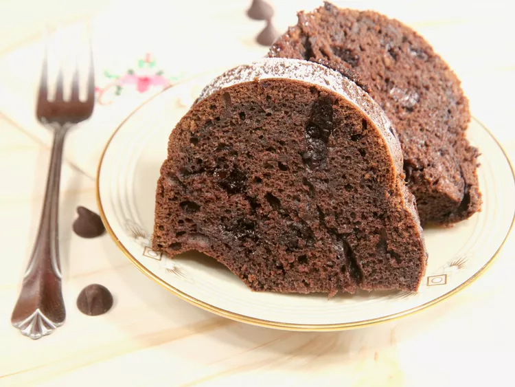

Momos are native South Asian dumplings made by wrapping a thin all-purpose flour dough wrapper around a seasoned filling. Originating in Tibet, they are traditionally packed into round "potli" pouch or crescent shapes, steamed until soft, and served alongside a fiery red chilli chutney. Fillings commonly feature minced meats, spiced vegetables, or grated paneer.7 sitesMomo (food) - WikipediaThe dough is rolled into small circular flat pieces. The filling is enclosed in the circular dough cover either in a round pocket ...WikipediaMomos Recipe | Veg Momos (Indian Street Style)7 Nov 2024 — Momos are a popular street food in various parts of India. They are also known as Dim Sum and are dumplings made with a flour doug...Dassana's Veg RecipesVeg Momos Recipe With Step By Step Photos - foodviva.com31 Oct 2016 — Veg Momos, a steamed or fried dumpling stuffed with mixed vegetables, is a delicious snack food enjoyed in Tibet region. From last...foodviva.comShow allchocolate brownie descriptionA chocolate brownie is a dense, square-baked dessert known for its rich, indulgent cocoa flavor. It features a texture that sits perfectly between a soft cake and a fudgy cookie, often sporting a signature crinkly, glossy top skin. Standard variations include fudgy, chewy, or cakey profiles, frequently packed with chocolate chips, walnuts, or pecans.